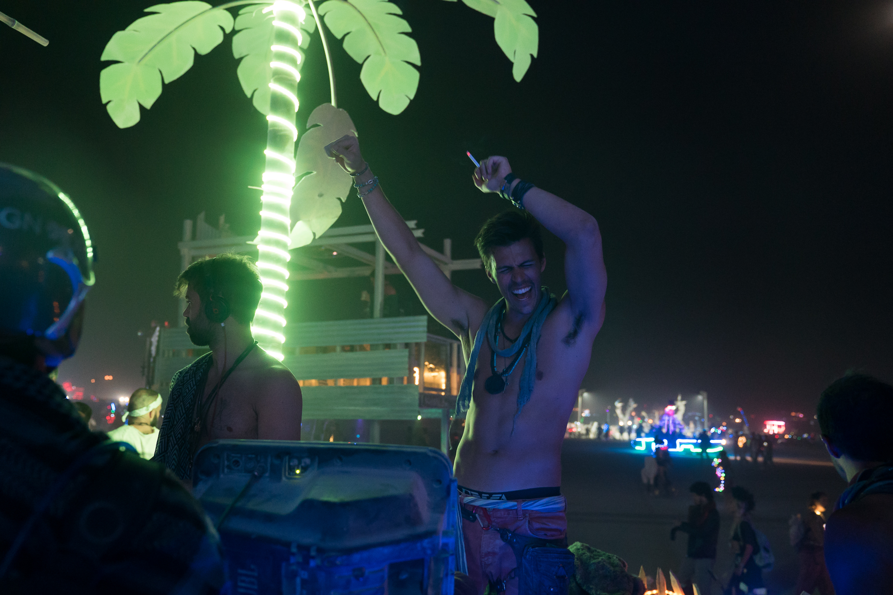
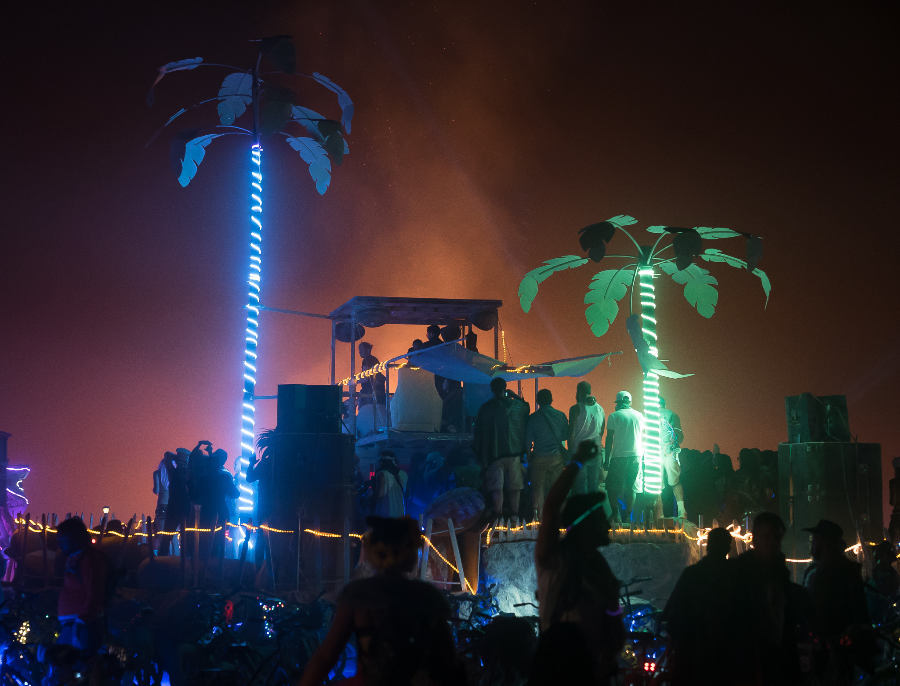
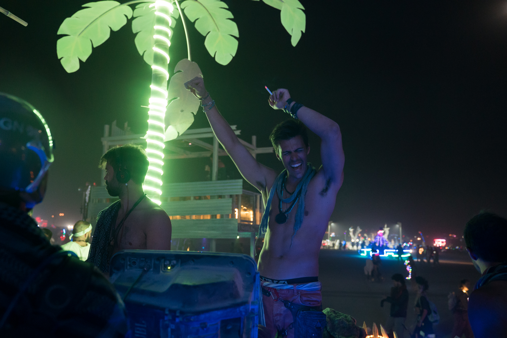
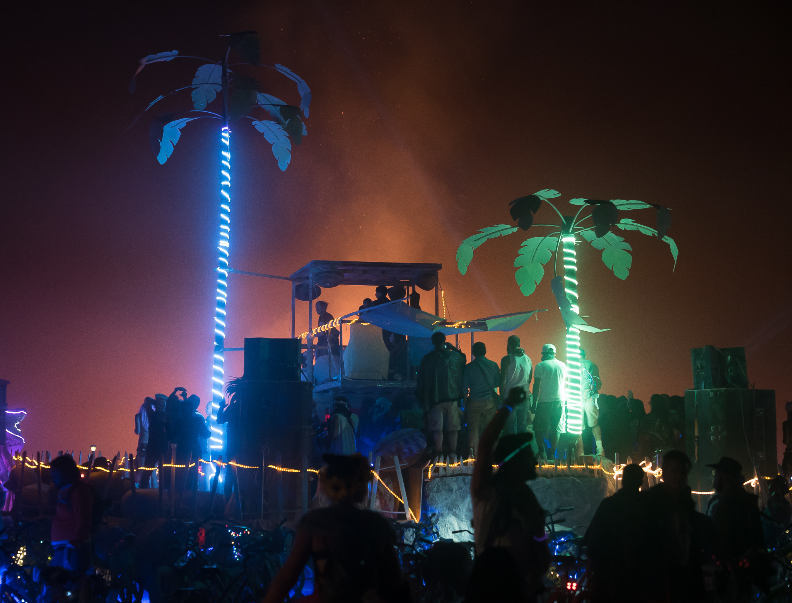

Humano the Tribe
Photography
Videography
Humano the Tribe captures the essence of the human spirit; Providing experiences around the world for those who crave a deeper connection with themselves and others.
PrettyBoy was tasked with capturing all of the special moments that took place at Humano's annual trip to Burning Man Festival, and with showcasing the custom infrastructure built for their camp.
 


